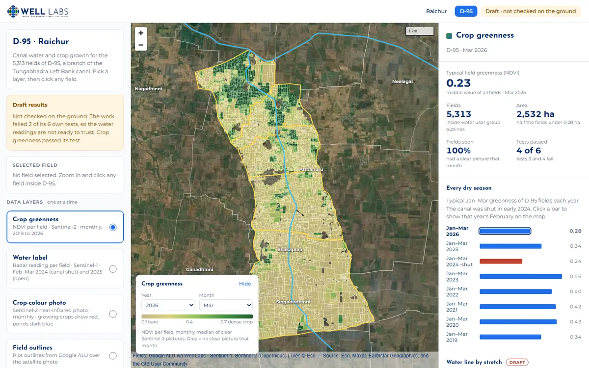
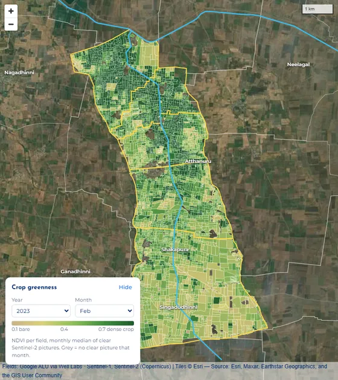
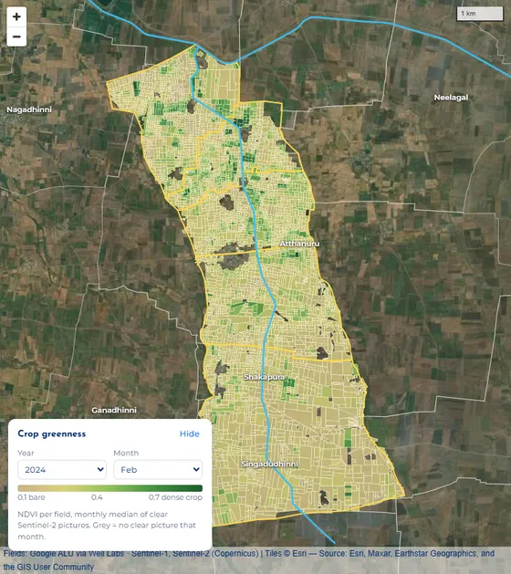
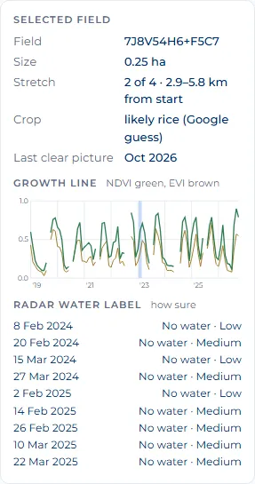
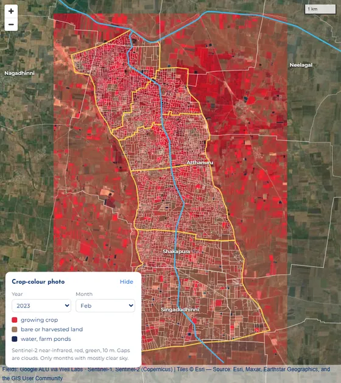
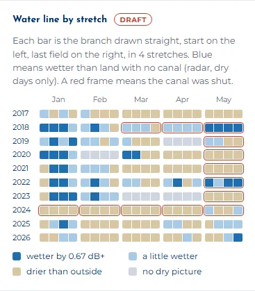
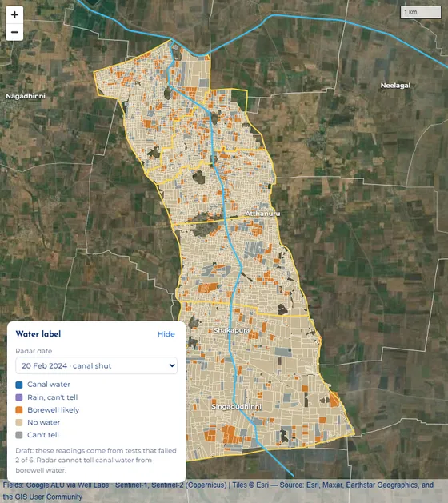
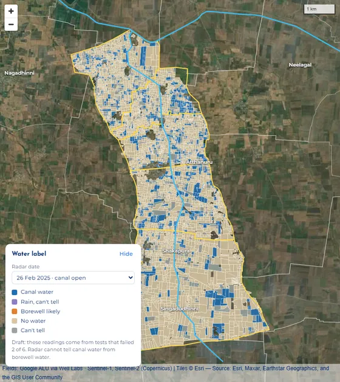

How to use the D-95 map
The map answers two questions about the D-95 branch of the Tungabhadra Left Bank canal in Raichur: how the crops are growing, and where the water is going. This page shows you, step by step, how to read each one.
This is a draft. Nobody has checked it on the ground yet. The crop growth part passed its test. The water part failed 2 of its 6 tests, so treat the water readings as hints, not facts.
1 · The screen in four parts

- Left panel. Pick one layer at a time (what the fields are coloured by). Below that, switch outlines on or off: water user groups (yellow), the canal (light blue), villages (white).
- The map. 5,313 fields on a satellite photo. Scroll or use + / − to zoom. Click any field and the map zooms in to it, and its details appear on the left.
- Picker box (bottom left of the map). Choose the year and month, or the radar date. It also shows what the colours mean. "Hide" folds it away.
- Right panel. The headline numbers for what you picked, a bar for every dry season, the water line chart and the six tests.
2 · Crop growth, from NDVI and EVI PASSED ITS TEST
NDVI and EVI are two "greenness" scores worked out from Sentinel-2 satellite photos, taken every few days at 10 m detail. Bare soil scores about 0.1. A thick, healthy crop scores 0.7 or more. The map keeps one value per field per month, from January 2019 to October 2026.
- Pick "Crop greenness" in the left panel. It is on when the page opens.
- Pick a month in the picker box. Tan means bare, dark green means a thick crop, and grey means clouds hid the field all month.
Tip: look at January to March. That is the dry season, so very little rain falls. A field that stays green then is almost always getting water from the canal or a borewell. From June to October the rains make nearly everything green, so you cannot tell much.
- Compare years. In the right panel, "Every dry season" gives each year's typical January–March greenness. Click a year and the map jumps to that February. The canal was shut in early 2024, and you can see it:

Feb 2023, canal open: green across most of the branch, thickest in the top half, nearer the start of the canal. 
Feb 2024, canal shut: almost all tan. The typical dry-season score fell from 0.46 to 0.24. - Click a field to see its growth line. The left panel shows a small chart from 2019 to 2026.
- Each hump is one crop: it greens up, peaks, then drops at harvest.
- The height of a hump shows how thick the crop got.
- Two humps a year means two crops: a rainy-season crop, then a dry-season crop on canal or borewell water.
- A flat, low line means the field was left empty.
- Breaks in the line are cloudy months with no clear photo. Nothing is filled in.
- Green line = NDVI, brown line = EVI. They usually move together. EVI keeps telling thick crops apart where NDVI tops out, and it is less fooled by bare soil showing between plants.
- The pale blue band marks the month picked on the map.

One field's card. This one grows two crops most years. - Check with your own eyes. Pick "Crop-colour photo". It is a real satellite photo of the month, shown in near-infrared, which plants reflect strongly. Strong red is a growing crop, pale pink-grey is bare or harvested land, and ponds are dark blue. Zoom in to see single fields. Turn off the overlays if the lines get in the way.

Feb 2023 crop-colour photo. Strong red = crop. The thin white lines are field outlines.
Questions you can answer with this
- Which fields grow a dry-season crop, and in which years?
- Did the 2024 canal shut-down hurt crops? (Yes, clearly.)
- Are fields near the start of the canal greener than fields at the far end? (Zoom to the top, then to the bottom, in the same month.)
- Is one field's crop doing better or worse than in past years? (Look at its growth line.)
3 · Water pattern, from radar FAILED 2 OF 6 TESTS
Read this first. This map does not measure soil moisture directly. It uses radar from the Sentinel-1 satellite. Radar bounces back more strongly from wet ground, so it hints at how wet the top few centimetres are. But plants and rough soil change the signal too.
To make it fairer, every reading compares canal land with nearby land outside the canal on the same day, and days with rain in the 3 days before are left out. Even so, the tests on the water readings failed, so use them as hints.
- Start with "Water line by stretch" in the right panel. It is the quickest way to see how far down the branch the water goes.
- Rows are years, columns are months (January to May, the dry season).
- Each bar is the branch drawn straight, cut into 4 stretches: the start of the canal on the left, the last fields on the right.
- Dark blue means that stretch was clearly wetter than land outside the canal. Pale blue means a little wetter. Tan means drier. Grey means no dry-day radar picture.
- A red frame means the canal was officially shut that month (from the Tungabhadra Board's dates).
- Hover over a bar to see the exact numbers.
What to look for: blue right across a bar means water reached the far end. Blue on the left fading to tan on the right means water reached the start but not the tail.
What it shows: January 2018–2023 is blue along most of the branch. 2024, when the canal was shut, is tan everywhere, as it should be. But 2025, when the canal was open, is also mostly tan, and by March–April even open years look dry. That is why the water tests failed.

Water line by stretch. - Pick "Water label" in the left panel to see a reading for each field. There are 9 radar dates: February–March 2024 (canal shut) and February–March 2025 (canal open). Choose one in the picker box.

20 Feb 2024, canal shut: almost every field reads "No water". 
26 Feb 2025, canal open: blue "Canal water" fields show up along the branch. Label What it means Canal water Clearly wetter than outside land (by 0.67 dB or more), and the canal was open. Borewell likely Clearly wetter, but the canal was shut, so the water probably came from a borewell or pond. No water Not wetter than outside land. Can't tell Only a little wetter, or no canal date for that day. Rain, can't tell It rained in the 3 days before, so the reading is skipped. - Click a field to see all 9 of its labels, each with how sure it is. High means a field over 1 ha, the same label as the time before, and at least 2 dry radar pictures in the last 30 days. Medium means 0.2 ha or more and the same label as before. Low is everything else. Most fields are small, so most labels are Medium or Low.
- Put water and greenness together. A field that stays green in February 2024, when the canal was shut, got its water from somewhere else, probably a borewell. A field that reads "Canal water" in 2025 but stays tan in the greenness layer may have been flooded for sowing, or the reading may be wrong.
What you can and cannot say
- You can say the radar saw the branch much drier in early 2024, when the canal was shut.
- The start of the branch usually reads wetter than the far end. But that also showed up in 2024, when the canal was shut, so it may not be canal water at all.
- You cannot yet say how much canal water each field got, or show water "moving" from week to week. The tests that would back that up failed.
- Radar cannot tell canal water from borewell water. It only tells wet from dry.
4 · Worked example: did the 2024 canal shut-down matter?
- In Every dry season, compare the bars: 2023 scored 0.46 and 2024 (red) scored 0.24. Crops were about half as green.
- Click 2023, then 2024. On the map, the green patches near the start of the canal disappear in 2024.
- In the Water line, the 2024 row is tan in every month, while 2018–2023 Januaries are blue. The radar agrees the land was dry.
- Pick Water label and 20 Feb 2024: almost no blue. Switch to 26 Feb 2025: blue fields come back.
- Click a field that was still green in Feb 2024. Its growth line shows whether it kept a dry-season crop. If it did, the canal did not water it that year, so it probably had a borewell.
What you can conclude: yes. With the canal shut, both the greenness and the radar wetness dropped sharply. The greenness part is solid. The radar part agrees here, but it was not reliable in other years.
5 · Colour key
| On the map | Means |
|---|---|
| Crop greenness: tan = bare (0.1), dark green = thick crop (0.7) | |
| Grey field | No clear photo or no reading for that month or date |
| Yellow line | Water user group boundaries (the D-95 command area) |
| Light blue line | The D-95 canal and the main canal |
| Red outline | The field you clicked |
| Red in the photo | Growing crop (crop-colour photo layer) |
6 · Limits and words
Limits
- Not checked on the ground. No farmer was asked.
- Field outlines and crop names are Google's guesses (from Google's Agricultural Understanding data). "Likely rice" may be wrong.
- Months with heavy cloud have no greenness value. Nothing is guessed to fill the gap.
- The satellite photo under the fields is from Esri, and its date is not known. The crop-colour photo layer is dated by month.
- Canal open and shut dates come from Tungabhadra Board yearly reports. From mid-April 2025 onward there is no report yet, so those months have no date.
- No farmer names or survey numbers are used. Field codes are map codes (Plus Codes), not ownership records.
Words
| NDVI | A greenness score from a satellite photo, from about 0 (bare) to 1 (very thick plants). |
|---|---|
| EVI | A second greenness score, better for thick crops and less fooled by bare soil. |
| Radar | The Sentinel-1 satellite sends out its own signal and measures what bounces back. It works through clouds. Wet ground bounces back more. |
| dB | The unit for radar strength. Here, 0.67 dB is the gap counted as "clearly wetter". |
| Stretch | One quarter of the branch's length, counted from where the canal starts. |
| Water user group | A farmers' group that shares water from one part of the canal. Their outlines mark the D-95 area. |
Data: Sentinel-2 and Sentinel-1 (Copernicus) through Google Earth Engine · fields: Google Agricultural Understanding via Well Labs · canal dates: Tungabhadra Board yearly reports · base photo: Esri World Imagery.